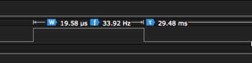

As part of Phase 2, we are required to observe and calculate the CPU utilization time for our system. The following results are observed from the remote station. The remote station has two scheduled tasks, readBluetoothInput(), and runServos().
To measure the execution time for each task, a logical analyzer is used. A logical analyzer is set to observe two digital pins on the Arduino board, each pin correspond to one scheduled task. When a task starts, a line of code will execute to pull the digital pin HIGH, and just before the task finishes, there will be another line of code to pull the digital pin LOW. As a result, we can observe the execution time and period for each task.
The measured average execution time for the runServo() task is about 0.2727 ms, and period is about 30 ms. A sample screenshot is shown below in Figure 4.4.1:
Figure 4.4.1 runServo execution time
THe measured average execution time for the readBluetoothInput() task is about 19.58 μs, and period is about 30 ms. A sample screenshot is shown below in Figure 4.4.2:
Figure 4.4.1 runServo execution time
The CPU Utilization is calculated as follow:
T: the period
C: total execution time of all scheduled tasks
U: CPU utilization percentage
T = 30.1 + 29.48 = 59.58 ms
C = 0.2727 +0.01958 = 0.29228 ms
U = 0.29228/59.58 = 0.0049 = 0.49%
Based on the samples we used, the CPU utilization time is about 0.5%, and 99.5% of the time, CPU is idle.